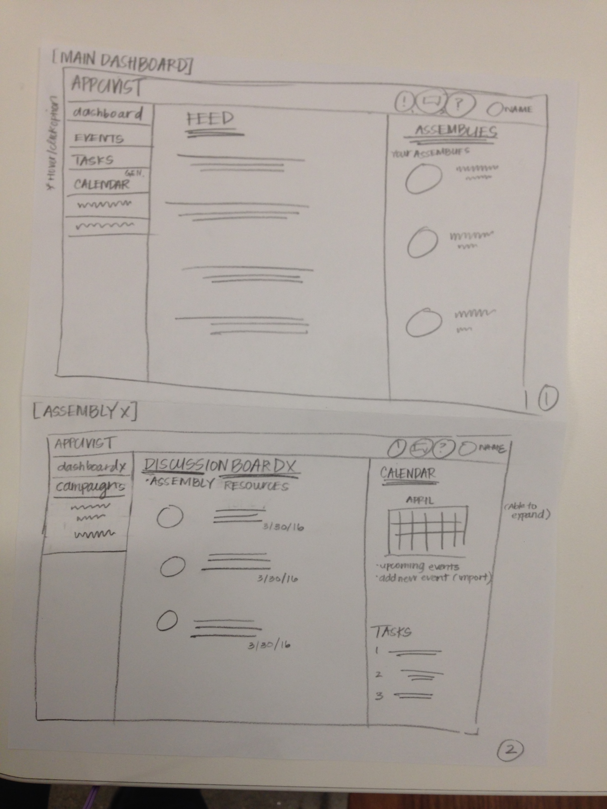
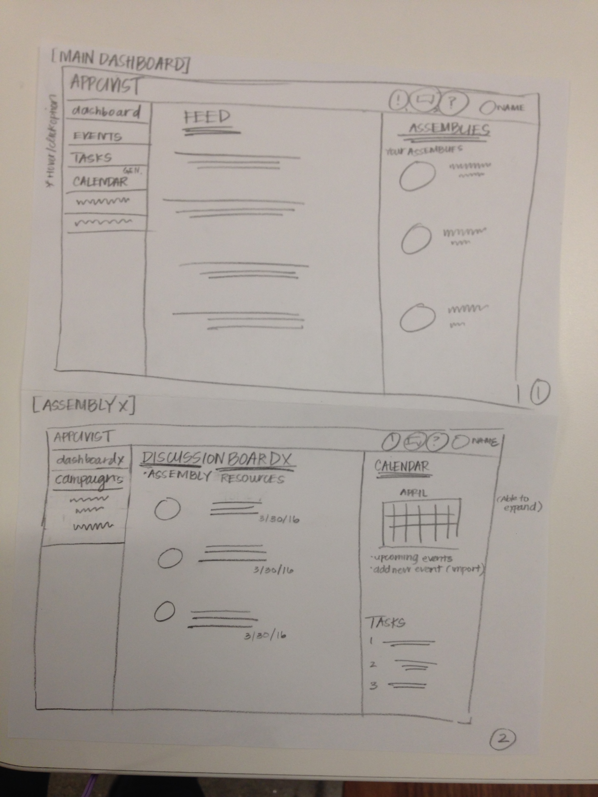

Appcivist
I worked with the Social Apps Lab in Citris on Appcivist, a platform for communication and organization for social activists. I worked on a team of 3 designers to design the user experience of the web application, and built wireframes using Adobe Illustrator. You can read more about the project here.




The Problem
Social activists currently find it very hard to organize themselves and to plan effective events. One of the hardest aspects is communicating with everyone who wishes to be involved with the group and advertising their cause. Much communication happens over email, and important information gets lost among dozens of threads, and it is difficult to organize events and notify everyone on a mailing list about them.Research
We interviewed current social activists to learn more about their frustrations and processes. We learned that many people have busy lifestyles but are still interested in supporting a social activist group, and therefore would like a platform that makes communication as easy and effortless as possible, without a high learning curve. Many tools, such as petition-makers and event-creators already exist, and they would prefer to continue using them rather than having to learn to use new tools. As a result, we focused on making the web application a primarily organizational tool that served as a hub for resources.Organizational Flow
The organization of groups can become very messy, because one person can support a few different causes, but be involved in many different groups within those causes, and each person might have a different level of involvement. We organized the groups such that one person could be a part of many different assemblies, which are groups of people supporting a large, overarching cause. Within assemblies are campaigns, which are smaller groups of people targeting a more specific goal, and within a campaign is a working group, which is an even smaller group of people. Members can share resources at each level of the hierarchy.

My Mobilization
We chose the three most important things that social activists would want to see for the dashboard: the organization of their involvements, a feed of important updates from each involvement, and updates from the events they are invited to.
Resource Hub
We wanted it to be easy and painless as possible for a person to find a certain document they are looking for. We designed the resource hub so that each group, at any level, has its own hub of common resources, categorized by the type of resource. Any person can upload a document, and tag it with descriptors so that others can easily search for it. Each resource has its own thread of comments, so that people can easily make comments about documents in one place.
Managing Events
A large focus of the platform is on creating and managing events, so we made it easy for people to view upcoming events in different forms (calendar and list form). Each level of involvement has its own event page to keep them organized, an an individual has his/her own consolidated events page of all involvements.